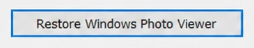
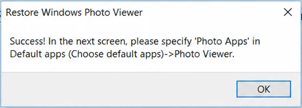
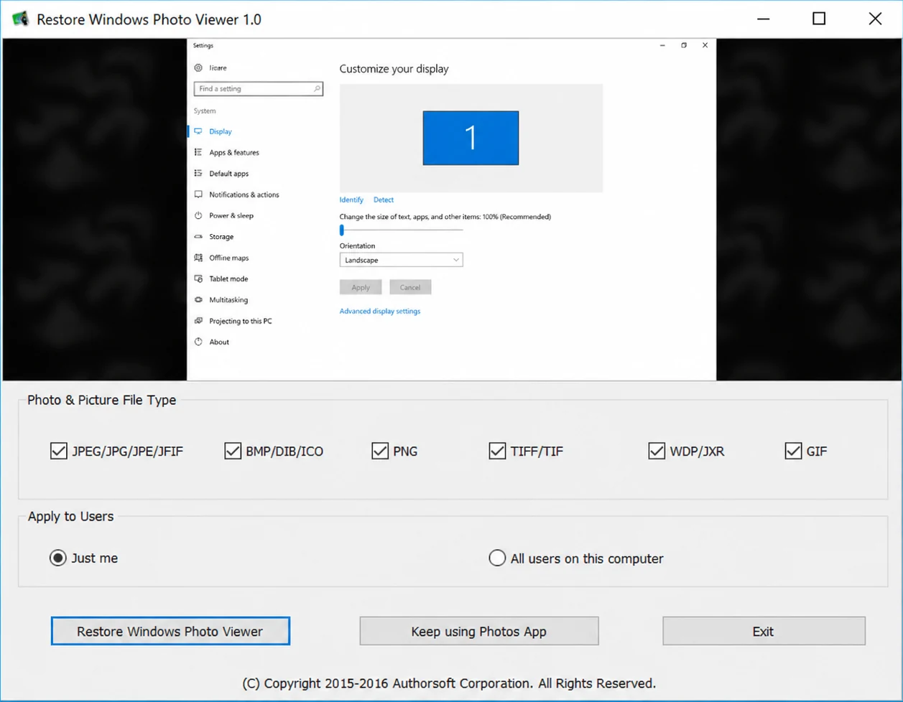

KOSTENLOS · OPEN SOURCE · EIN KLICK
Windows-Fotoanzeige unter Windows 10 & 11 zurückholen
Holen Sie die klassische Fotoanzeige mit einem Klick zurück. Ohne Registry-Bearbeitung, jederzeit rückgängig.
- Open Source auf GitHub
- Vollständig umkehrbar
- Keine Registry-Kenntnisse nötig
Dasselbe Foto, zwei sehr unterschiedliche Fenster
Die Fotos-App ist um Bibliothek, Cloud-Sync und Bearbeitung herum gebaut. Die Windows-Fotoanzeige zeigt einfach das Bild, das Sie doppelt angeklickt haben.
Foto öffnen
Lädt zuerst Galerie und Bibliothek, das Bild erscheint erst nach einer Pause
Das Bild ist sofort nach dem Doppelklick da
Symbolleiste
Bearbeiten, visuelle Suche, Teilen und OneDrive-Anmeldehinweise
Datei, Drucken, E-Mail, Brennen, Öffnen. Zoom und Drehen unten.
Versteckt im „…“-Menü
Drucken direkt in der Symbolleiste, ein Klick bis zum Druckdialog
Ordner durchblättern
Filmstreifen und Galerieansicht zum Scrollen
Pfeiltasten blättern durch den Ordner, F11 startet die Diashow
So holen Sie die Windows-Fotoanzeige zurück
Drei Schritte. Den Registrierungs-Editor müssen Sie nicht öffnen.
-
Schritt 1
Herunterladen & starten
ZIP entpacken und RestoreWindowsPhotoViewer.exe doppelklicken. Falls SmartScreen erscheint: Weitere Informationen, dann Trotzdem ausführen.
-
Schritt 2
Restore klicken
Dateitypen wählen und festlegen, ob es nur für Sie oder alle Benutzer gilt. Dann Restore Windows Photo Viewer und OK klicken.


-
Schritt 3
Als Standard festlegen
In Einstellungen, Standard-Apps, unter Fotoanzeige die Windows-Fotoanzeige wählen. Oder ein Foto rechtsklicken, Öffnen mit, dann Windows-Fotoanzeige.
Was das Tool macht und was es nicht anrührt
Die Windows-Fotoanzeige war nie weg. Microsoft hat sie seit Windows 8 nur versteckt. Dieses Tool macht sie wieder auswählbar.
Windows-Fotoanzeige mit einem Klick wiederherstellen
Das Tool setzt die wenigen Registry-Einträge, die die Fotoanzeige wieder als Standard-App verfügbar machen, und fügt sie wieder zu „Öffnen mit“ hinzu.
- Formate wählen: JPEG, BMP, PNG, TIFF, WDP, GIF
- Nur für Sie oder für alle Benutzer des Computers
- Ihre Fotos werden nicht verschoben, verändert oder gelöscht

Jederzeit rückgängig, zurück zur Fotos-App
Anders überlegt? Tool erneut öffnen und Keep using Photos App klicken. Windows öffnet Bilder dann wieder wie vorher in der Fotos-App.
In beide Richtungen wird nichts deinstalliert, das Hin- und Herwechseln ist also sicher.
Keep using Photos App macht alle Änderungen von Restore rückgängig.
Läuft unter Windows 10 und Windows 11
Auch mit den neuesten Updates. Eine einzelne portable .exe, ohne Installation und komplett offline.
Keine manuelle Registry-Bearbeitung
Kein regedit, keine .reg-Dateien, keine Suche nach den richtigen Schlüsseln. Das Tool schreibt die Änderungen und kann sie zurücknehmen.
Warum nicht einfach die Registry von Hand bearbeiten?
Der Fix besteht aus ein paar Registry-Schlüsseln. Es gibt drei Wege, sie zu setzen, und sie verlangen sehr Unterschiedliches von Ihnen.
| Dieses Tool | .reg-Datei | Registry von Hand | |
|---|---|---|---|
| Keine Tippfehler möglich | Ja | Nur wenn die Datei stimmt | Ein falscher Wert und nichts geht |
| Rückgängig mit einem Klick | Ja | Braucht eine zweite Datei | Jeden Schlüssel selbst zurücksetzen |
| Kein Fachwissen nötig | Ja | Sie importieren eine Datei, die Sie nicht lesen können | regedit erforderlich |
| Dateitypen und Benutzer wählen | Kontrollkästchen | Fest in der Datei | Wenn Sie die Schlüssel kennen |
Die meisten Download-Seiten bieten nur eine nackte .reg-Datei an. Dieses Tool setzt denselben Fix, zeigt, was er umfasst, und bietet einen Weg zurück.
Fragen vor dem Download
Keine Antwort gefunden? Issue auf GitHub eröffnen.
Ist die Nutzung sicher?
Ja. Das Tool ändert nur, welche App Windows als Standard-Fotoanzeige verwendet. Es verändert oder löscht keine Fotos, und die Änderung lässt sich jederzeit im Programm rückgängig machen.
Funktioniert es unter Windows 11?
Ja. Restore Windows Photo Viewer läuft unter Windows 10 und Windows 11, auch mit den neuesten Updates.
Warum fehlt die Windows-Fotoanzeige in meinen Standard-Apps?
Seit Windows 8 blendet Microsoft die Windows-Fotoanzeige in den Standard-Apps aus, obwohl die Programmdateien weiterhin in Windows enthalten sind. Dieses Tool aktiviert sie wieder, ohne etwas zu entfernen oder neu zu installieren.
Kann ich später zur Fotos-App zurückwechseln?
Ja. Tool erneut öffnen und Keep using Photos App klicken. Windows öffnet Bilder dann wieder in der Fotos-App.
Brauche ich Administratorrechte?
Ja. Da das Tool Standard-App-Einstellungen des Systems ändert, braucht es Administratorrechte. Falls es nicht automatisch fragt: .exe rechtsklicken und Als Administrator ausführen wählen.
Bereit für Ihre klassische Fotoanzeige?
Kostenlos und Open Source. ZIP herunterladen, .exe starten, Restore klicken.